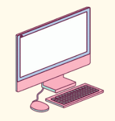

Garotas da Informática

Esta é uma página criada por Julia Oliveira, Karla Torres e Flávio Coutinho e feita para mulheres que possuem interesse em TI. Aqui vamos mostrar um pouco do histórico de mulheres em TI, dicas, falar sobre o CEFET-MG e muito mais!!